之前的文章关注的是两个变量都是数值变量的情况,当有一个变量是分类变量的时候，我们就需要其他类型的图形来展示分析数据。在seaborn中有多种类型的图形且非常易于上手。
1 | import numpy as np |
seaborn中，分类图主要分为三个部分：
- 分类散点图：
- stripplot(默认，kind = “strip”)
- swarmplot(kind = “swarm”)
- 分类分布图：
- boxplot(kind=”box”)
- violinplot(kind=”violin”)
- boxenplot(kind=”boxen”)
- 分类估计图：
- pointplot(kind=”point”)
- barplot(kind=”bar”)
- countplot(kind=”count”)
以上三种系列分别代表了不同粒度级别的数据。当然，在实际使用的过程中，其实没有必要记住这么多，因为seaborn中的分类系列有统一的图形界面catplot(),只需要这一个函数，就能访问所有分类图像类型。
分类散点图
seaborn.stripplot(x=None, y=None, hue=None, data=None, order=None, hue_order=None, jitter=True, dodge=False, orient=None, color=None, palette=None, size=5, edgecolor=’gray’, linewidth=0, ax=None, **kwargs)
- jitter : 是否抖动，True，false or float
- dodge : 当有hue参数时，是否沿轴分离不同颜色
- orient : 图形方向，垂直（“v”）或者水平(“h”)
1 | # 1、catplot() 默认情况下，kind='strip' |
total_bill tip sex smoker day time size
0 16.99 1.01 Female No Sun Dinner 2
1 10.34 1.66 Male No Sun Dinner 3
2 21.01 3.50 Male No Sun Dinner 3
3 23.68 3.31 Male No Sun Dinner 2
4 24.59 3.61 Female No Sun Dinner 4
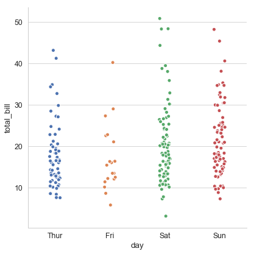
1 | # 1、stripplot() |
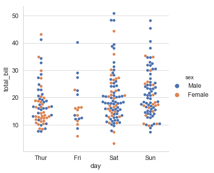
1 | # 1、stripplot() |
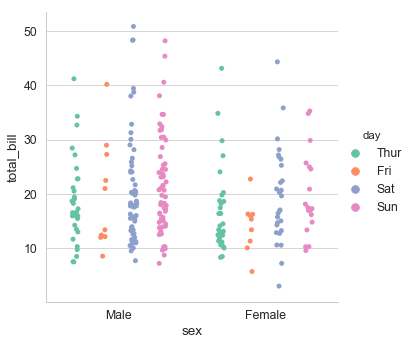
1 | # 排序 |
Sat 87
Sun 76
Thur 62
Fri 19
Name: day, dtype: int64
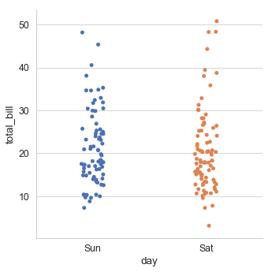
分类分布图
箱线图 boxplot()
seaborn.boxplot(x=None, y=None, hue=None, data=None, order=None, hue_order=None, orient=None, color=None, palette=None, saturation=0.75, width=0.8, dodge=True, fliersize=5, linewidth=None, whis=1.5, notch=False, ax=None, **kwargs)
- saturation : float,颜色饱和度
- fliersize : 异常值标记的大小
- whis : float,超出IQR多少比例被视为异常值，默认1.5
- notch : 是否用中位数设置凹槽
1 | # 箱线图 catplot(kind='box') |
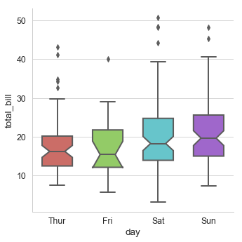
1 | # 通过hue参数再分类 |
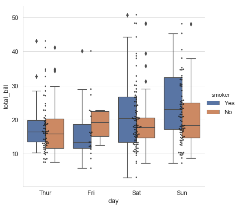
对于数据量较大的数据集，散点图会显的很拥挤，这时我们可以使用boxenplot(),这种图表类似箱线图，既能够展示数据的分布也可以如箱线图展示数据的统计信息
1 | diamonds = sns.load_dataset("diamonds") |
carat cut color clarity depth table price x y z
0 0.23 Ideal E SI2 61.5 55.0 326 3.95 3.98 2.43
1 0.21 Premium E SI1 59.8 61.0 326 3.89 3.84 2.31
2 0.23 Good E VS1 56.9 65.0 327 4.05 4.07 2.31
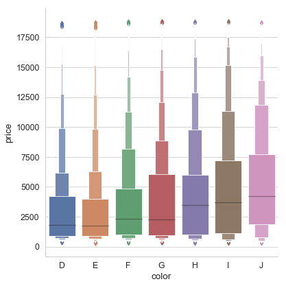
提琴图
小提琴图将核密度估计和箱线图结合起来
seaborn.violinplot(x=None, y=None, hue=None, data=None, order=None, hue_order=None, bw=’scott’, cut=2, scale=’area’, scale_hue=True, gridsize=100, width=0.8, inner=’box’, split=False, dodge=True, orient=None, linewidth=None, color=None, palette=None, saturation=0.75, ax=None, **kwargs)
- bw : (“scott”,”silverman”,float),核大小的比例因子，实际效果是越大越平滑。
- cut : float,用于将密度扩展到极端数据点之外的距离，设置为0以将小提琴范围限制在观测数据的范围内。
- scale : 小提琴图的宽度：area-面积相同，count-按照样本数量决定宽度，width-宽度一样
- scale_hue : bool,当有hue时，决定实在分组内还是图上所有小提琴计算缩放比例
- gridsize : 和必读估计离散网格中的点数，越高越平滑
- inner : （“box”, “quartile”, “point”, “stick”, None），内部显示样式
- split : 当有颜色嵌套是，是否分别绘制每侧的小提琴。
1 | # 2、violinplot() |
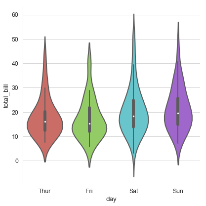
1 | # 2、violinplot() |
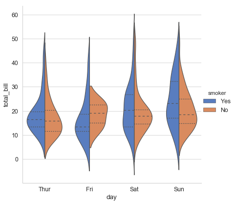
1 | # 2、violinplot() |
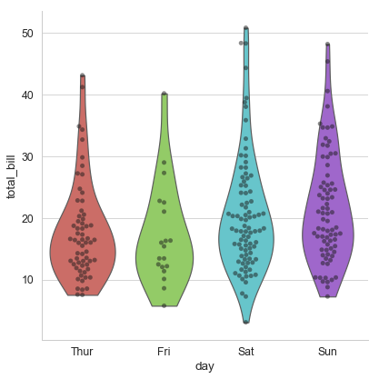
统计图
seaborn.barplot(x=None, y=None, hue=None, data=None, order=None, hue_order=None, estimator=<\function mean>, ci=95, n_boot=1000, units=None, orient=None, color=None, palette=None, saturation=0.75, errcolor=’.26’, errwidth=None, capsize=None, dodge=True, ax=None, **kwargs)
- estimator : 分类箱内使用的统计函数
- ci : （float,”sd”,None）
- units : 变量名称，对变量的每个采样单独绘制，可用于绘制重复数据
- errwidth : 误差线宽度
- capsize : 误差条帽的宽度
1 | # 1、barplot() |
sex class
female First 0.968085
Second 0.921053
Third 0.500000
male First 0.368852
Second 0.157407
Third 0.135447
Name: survived, dtype: float64
sex class
female First 0.176716
Second 0.271448
Third 0.501745
male First 0.484484
Second 0.365882
Third 0.342694
Name: survived, dtype: float64
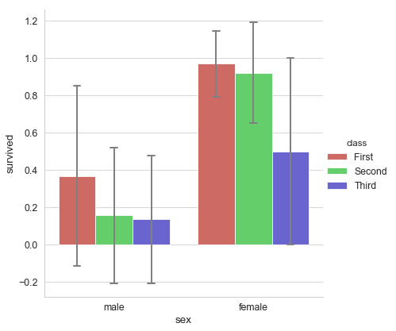
1 | # 1、barplot() |
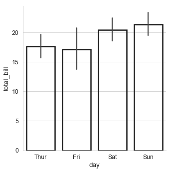
1 | # 1、barplot() |
total speeding alcohol not_distracted no_previous ins_premium \
40 23.9 9.082 9.799 22.944 19.359 858.97
34 23.9 5.497 10.038 23.661 20.554 688.75
48 23.8 8.092 6.664 23.086 20.706 992.61
3 22.4 4.032 5.824 21.056 21.280 827.34
17 21.4 4.066 4.922 16.692 16.264 872.51
ins_losses abbrev
40 116.29 SC
34 109.72 ND
48 152.56 WV
3 142.39 AR
17 137.13 KY
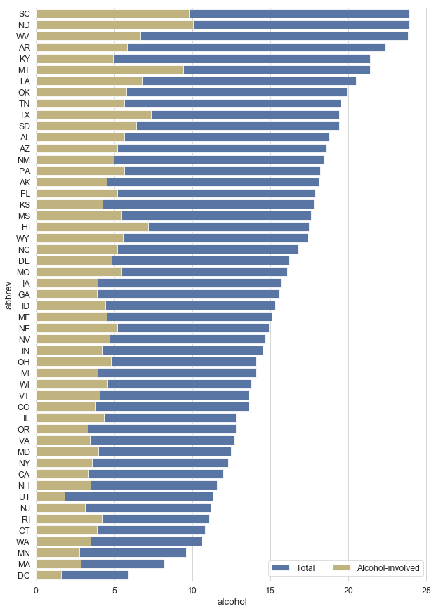
1 | # 2、countplot() |
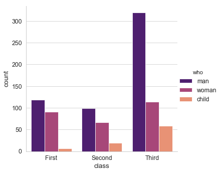
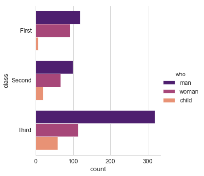
1 | # 3、pointplot() |
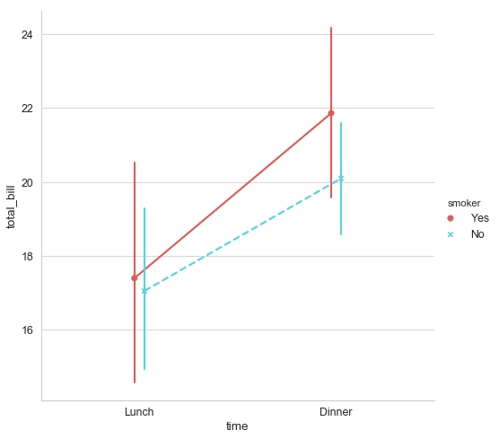